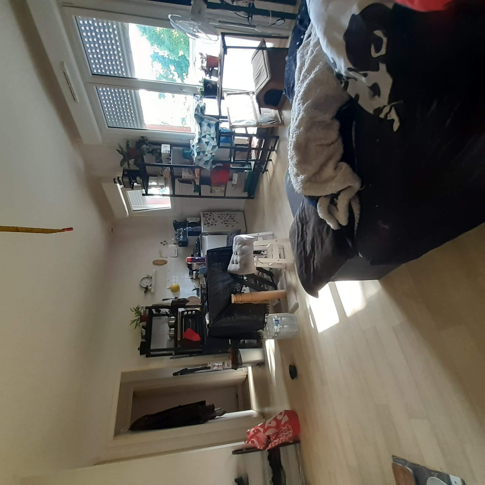

Passage au Super U avec la Clio 2 ce matin pour les courses essentielles.
Puis direction l’exploitation pour avancer sur les plants et assurer l’arrosage.
Installation du nouveau téléphone dans l’après-midi : tout fonctionne bien maintenant.
Avancées sur le projet du site "The Art of Dark" : corrections de mise en page, ajustements CSS, centrage des contenus et résolution du souci de background mobile.
Ensuite, grosse session sur Live2D : import du PSD, découpage, rigging de la bouche, premières clés d’animation créées. Tests d’intégration dans un widget PC avec WPF.
Fatigue bien présente en fin de journée, avec douleurs et gargouillis au bas-ventre ce soir.
Rien d’alarmant pour l’instant, mais repos conseillé.
Motivation tout au long de la journée malgré la fatigue. Un bon mélange de concentration, de fun et de créativité.
Un peu de frustration sur les bugs d’import, mais grande satisfaction en voyant Lina commencer à prendre vie.
Journée plutôt en solo, centrée sur les projets perso et le calme de l’exploitation.
Pas encore couché à 4h30 du matin, grosse fatigue. Il va falloir bien dormir après ça.
Journée très connectée avec moi : soutien technique, codes, debugging, conseils pour Live2D, et un gros moment complice pour animer l’avatar.
Objectif de faire vivre Lina en widget animé, réactif aux messages.
